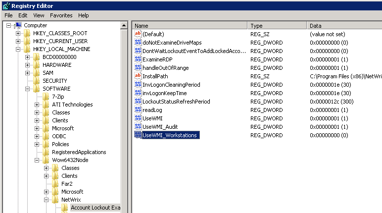

After installing Account Lockout Examiner(ALE) remote desktop servers are caused be
increased CPU usage with the process wmiprsve.exe.
This has been traced back to WMI calls originating from the server running ALE. If we
stop the Netwrix Account Lockout Examiner service while the CPU is loaded , the CPU usage
is reduced immediately.
ALE tracks lockout events and invalid logon events from Windows security log of specified DCs. Once an invalid logon event is collected from the DC, ALE connects to the machine where the invalid logon originated and search for details in its security log.
By default the WMI service is used to connect to security logs. Every invalid logon event on a DC initiates a WMI query to the workstation (servers) on which that logon occurred. In case there are a lot of invalid logons on the target machine, numerous WMI calls can affect CPU usage.
There are two options here
1. Switch method that is used to connect to security logs. In this case WMI service will not be used by ALE, but a .Net-based mechanism will be. This will reduce the CPU usage of servers, however might cause high CPU usage on the ALE machine.
2. If step 1 is not enough, disable searching for detailed info about invalid logons. In this case ALE will not try to search for information on workstation or servers, the only source will be domain controllers. With this scenario you will never see the name of the process that caused invalid logon.
In order to do this perform the following on the machine where ALE is installed:
ALE tracks lockout events and invalid logon events from Windows security log of specified DCs. Once an invalid logon event is collected from the DC, ALE connects to the machine where the invalid logon originated and search for details in its security log.
By default the WMI service is used to connect to security logs. Every invalid logon event on a DC initiates a WMI query to the workstation (servers) on which that logon occurred. In case there are a lot of invalid logons on the target machine, numerous WMI calls can affect CPU usage.
There are two options here
1. Switch method that is used to connect to security logs. In this case WMI service will not be used by ALE, but a .Net-based mechanism will be. This will reduce the CPU usage of servers, however might cause high CPU usage on the ALE machine.
In order to do this perform the following on the machine where ALE is installed:

- Run Registry Editor (regedit),
- Go to HKLMSoftware[Wow6432Node]NetWrixAccount Lockout Examiner (Wow6432Node only for x64 OS)
- Change the "UseWMI_Workstations" value to 0
- Restart the Netwrix Account Lockout Examiner service via Services.msc
2. If step 1 is not enough, disable searching for detailed info about invalid logons. In this case ALE will not try to search for information on workstation or servers, the only source will be domain controllers. With this scenario you will never see the name of the process that caused invalid logon.
In order to do this perform the following on the machine where ALE is installed:
- Run Registry Editor (regedit)
- Go to HKLMSoftware[Wow6432Node]NetWrixAccount Lockout Examiner (Wow6432Node only for x64 OS),
- Create a new DWORD called "PF_Enabled" and set its value to 0.
- Restart the Netwrix Account Lockout Examiner service via Services.msc